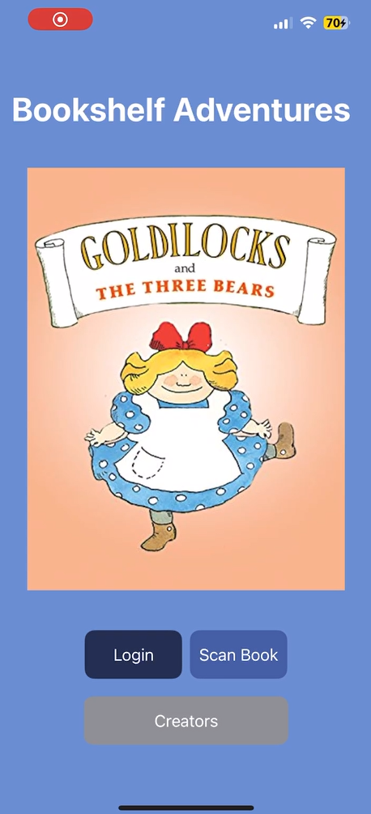
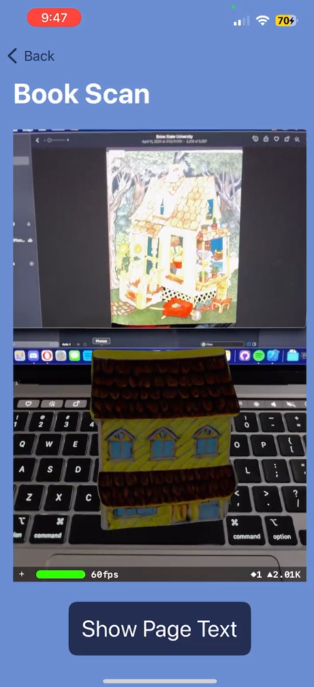
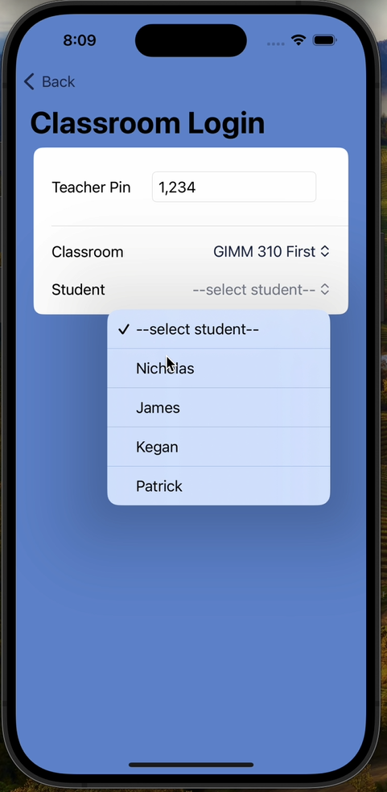

← All work
iOS · ARKit · SwiftUI
Bookshelf Adventures
An iOS augmented-reality reader built with Mississippi State's special-needs department, designed to be usable by children with cognitive and motor differences.
- Role
- AR Specialist & co-UI designer
- Platform
- iOS (iPad / iPhone)
- Stack
- SwiftUI · ARKit
- Team
- Student team + MSU special-needs dept.
- Duration
- Senior capstone (one semester)
- Status
- Delivered to partner program
The challenge
Partner with Mississippi State's special-needs department to build an iOS AR reader that makes children's books come alive, accessible enough for kids with cognitive and motor differences, and stable on common classroom iPads.
What I owned
- ARKit pipeline: image recognition, 3D model placement and real-time tracking against physical book pages.
- Co-designed the UI with the MSU research team, translating their accessibility research into SwiftUI components.
- AR scene rendering: loading and positioning book-specific assets at runtime.
Outcome
- Delivered to the MSU partner program for student use.
- Co-built with practicing accessibility researchers.
- Informed my approach to accessible XR ever since.
Stack: SwiftUI · ARKit · Xcode · Figma · 3D modeling


